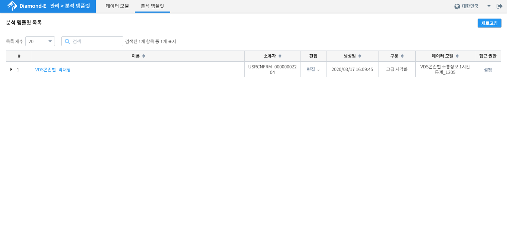
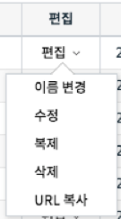
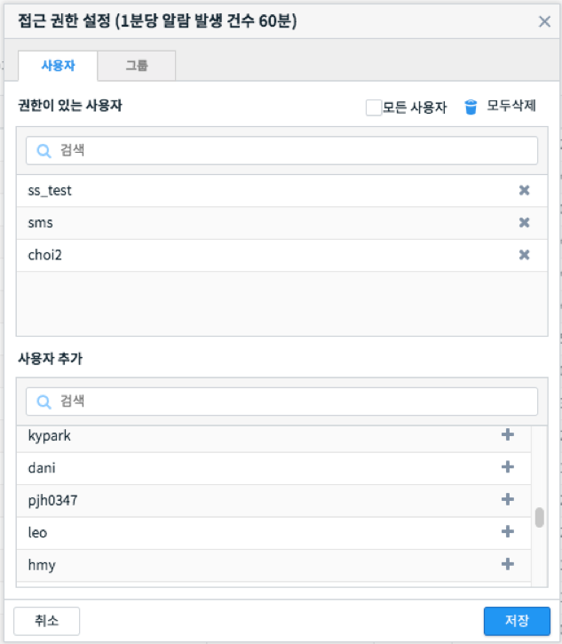

분석 템플릿¶
시각화는 분석 화면에서 검색 조건과 여러가지 설정 정보를 담고 있는 일종의 템플릿입니다. 시각화 관리 화면에서는 각 화면에서 사용자가 작성하여 저장한 시각화 객체들을 수정하거나 삭제할 수 있습니다. 또한 특정 시각화를 다른 사용자가 접근할 수 있도록 권한을 부여할 수도 있습니다.
| 번호 | 구분 | 설명 | |
|---|---|---|---|
| 1 | 새로고침 버튼 | 시각화 목록을 다시 불러와 갱신합니다. | |
| 2 | 목록 설정 | 그리드에 표시되는 항목들을 필터링하거나 선택할 수 있습니다. | |
| 3 | 시각화 목록 | 이름 | 시각화의 이름 |
| 소유자 | 시각화 내용을 작성/저장한 사용자 | ||
| 작업 | 시각화 편집/복사/삭제 기능 | ||
| 생성일 | 시각화 생성일시 | ||
| 구분 | 시각화 유형 혹은 시각화를 저장한 분석 화면 이름 | ||
| 데이터 모델 | 시각화의 데이터 모델 정보 | ||
| 접근 권한 | 접근 권한 설정 기능 | ||
상기 화면에서는 저장되어 있는 시각화 항목들을 확인할 수 있으며, 원하는 시각화를 빠르게 찾기 위한 목록 개수, 필터링 기능을 제공합니다. 특정 시각화를 펼치면 상세한 정보를 볼 수 있습니다. 또한, 원하는 시각화를 편집/복사/삭제를 할 수 있습니다.
시각화 조회¶
사용자는 현재 저장되어 있는 시각화 항목들을 손쉽게 확인 할 수 있으며, 시각화 객체 관리에 필요한 편의 기능들을 제공합니다.


Option 4: 상세보기¶
목록에서 모델명 좌측에 ▶ 아이콘을 클릭하면 데이터 모델의 상세정보를 표시합니다. 다시 ▼ 를 클릭하면 상세정보를 닫습니다.
Option 5: 작업¶
특정 시각화를 편집, 복사 하거나 삭제할 수 있습니다. 이름을 변경하거나, 시각화를 저장한 화면으로 이동하여 편집을 수행할 수 있고 URL 복사 기능으로 해당 시각화를 빠르게 접근할 수 있는 URL을 얻을 수도 있습니다.
시각화 접근 권한 설정¶
특정 시각화를 다른 사용자가 접근할 수 있도록 사용자나 그룹 단위로 접근 권한을 설정할 수 있습니다.
| 번호 | 구분 | 설명 |
| 1 | 사용자/그룹 탭 | 사용자 혹은 그룹을 전환하기 위한 탭 |
| 2 | 모든 사용자 체크박스 | 모든 사용자에게 공유하고자 할 때 체크하는 설정 |
| 3 | 현재 권한 목록 | 현재 접근 권한을 가진 사용자 혹은 4)사용자 목록에서 추가한 권한을 부여하고자 하는 사용자 목록 |
| 4 | 사용자 목록 | 모든 사용자 목록. “추가” 버튼을 클릭하면 3)현재 권한 목록에 추가됩니다. |